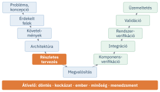
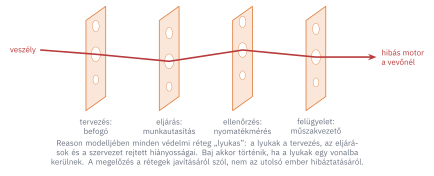
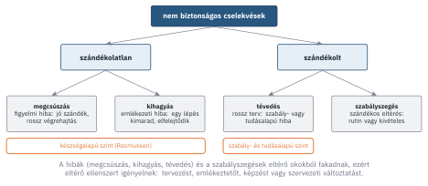

A fejezet feldolgozása után képes leszel:
- megkülönböztetni az emberi hibát mint okot és mint tünetet, valamint a személyközpontú és a rendszerszemléletű megközelítést;
- besorolni az emberi hibákat (megcsúszás, kihagyás, tévedés, szabályszegés) és összekapcsolni őket Rasmussen viselkedési szintjeivel;
- felsorolni a teljesítményt befolyásoló tényezőket, és ismertetni az emberi megbízhatóság-elemzés (HRA) célját és korlátait;
- egy egyszerű HEART-számítással összehasonlítani tervezési változatokat;
- hibabiztos (poka-yoke) megoldásokat és kényszerítő funkciókat tervezni;
- az emberi hibák elemzését beépíteni a kockázatelemzésbe és a szervezeti tanulásba.
Az emberközpontú tervezés (11. fejezet) és a funkciómegosztás (12. fejezet) után is marad egy kérdés: mi történik, ha az ember hibázik? Az ember hibázni fog: ez nem jellemhiba, hanem az emberi működés természetes velejárója. A rendszermérnök feladata nem a hibátlan ember feltételezése, hanem olyan rendszer tervezése, amelyben a hibák ritkák, időben észrevehetők, és nem vezetnek súlyos következményhez.
A fejezet négy kérdésre épül:
- Hogyan gondolkodjunk az emberi hibáról: ok vagy tünet?
- Milyen típusú hibákat követünk el, és miért?
- Hogyan becsülhető az emberi hiba valószínűsége, és mire jó ez a becslés?
- Hogyan tervezhetünk a hibák ellen?
13.1. Az emberi hiba két szemlélete
Reason két megközelítést különít el az emberi hiba kezelésében (Reason 2000). A személyközpontú megközelítés a hibát az egyén figyelmetlenségével, hanyagságával, motiválatlanságával magyarázza, és a válasza a figyelmeztetés, a fegyelmezés, az újabb utasítás. A rendszerszemléletű megközelítés abból indul ki, hogy az ember esendő, és a hibák a legjobb szervezetekben is előfordulnak. A hibák ezért inkább következmények, mint okok: a munkahely és a szervezet rejtett hiányosságaiból fakadnak. A válasz itt nem az ember megváltoztatása, hanem azoké a feltételeké, amelyek között dolgozik.
Reason híres svájcisajt-modellje szerint a rendszer veszélyekkel szembeni védelme több rétegből áll (műszaki megoldások, eljárások, képzés, felügyelet), és minden rétegnek vannak „lyukai” (13.1. ábra). A lyukak egy része aktív hiba: az első vonalban dolgozó ember tévedése, kihagyása. Más része lappangó feltétel: a tervezés, az eljárások, a szervezet hiányossága, amely hosszú ideig rejtve maradhat. Baj akkor lesz, ha a lyukak pillanatnyilag egy vonalba kerülnek (Reason 2000).

Dekker gyakorlati útmutatója ugyanezt a szemléletet képviseli: az „emberi hiba” nem magyarázat, hanem kiindulópont a vizsgálathoz. Azt kell megérteni, miért tűnt ésszerűnek az adott embernek abban a helyzetben azt tenni, amit tett (Dekker 2014). A rendszermérnök számára ez döntő különbség. Ha egy balesetvizsgálat „emberi hiba” megállapításánál megáll, a rendszer nem változik, és a következő ember ugyanabban a helyzetben ugyanazt a hibát fogja elkövetni.
13.2. A hibák típusai
Reason osztályozása a nem biztonságos cselekvéseket aszerint csoportosítja, hogy szándékosak voltak-e, és hol csúszott el a folyamat (Reason 1990) (13.2. ábra):
- megcsúszás (slip): a szándék jó, de a végrehajtás téves, jellemzően figyelmi hiba miatt (például rossz gombot nyom meg, mert ugyanott van, mint a megszokott);
- kihagyás (lapse): egy lépés kimarad vagy elfelejtődik, emlékezeti hiba miatt (például félbeszakítás után nem folytatja ott, ahol abbahagyta);
- tévedés (mistake): maga a terv hibás. Szabályalapú tévedésnél egy jó szabályt rossz helyzetben, vagy egy rossz szabályt alkalmaz; tudásalapú tévedésnél új helyzetben hiányos tudás vagy rossz helyzetértékelés alapján dönt;
- szabályszegés (violation): szándékos eltérés az előírt eljárástól, jellemzően nem ártó szándékkal, hanem mert az előírás betartása nehézkes, időigényes vagy a helyzethez nem illő. Lehet rutinszerű (mindenki így csinálja) vagy kivételes (egy rendkívüli helyzetben).

Rasmussen modellje az emberi viselkedés három szintjét különíti el (Rasmussen 1983). A készségalapú viselkedés begyakorolt, tudatos figyelem nélkül zajló mozdulatsor (például egy alkatrész behelyezése). A szabályalapú viselkedés ismert helyzetben tárolt szabályokat alkalmaz („ha a jelzőfény piros, akkor…”). A tudásalapú viselkedés új, ismeretlen helyzetben tudatos elemzést és problémamegoldást igényel. A megcsúszások és a kihagyások a készségalapú szinten, a tévedések a szabály- és tudásalapú szinten jellemzők.
A besorolásnak gyakorlati jelentősége van, mert a különböző típusú hibák ellen különböző eszközök hatásosak. A megcsúszások ellen a tervezés (egyértelmű elrendezés, egymástól megkülönböztethető kezelőszervek, hibabiztos kialakítás), a kihagyások ellen az emlékeztetők és az ellenőrzőlisták, a tévedések ellen a képzés, a jobb információ és a döntéstámogatás, a szabályszegések ellen az eljárások észszerűsítése és a szervezeti kultúra.
13.3. A teljesítményt befolyásoló tényezők
Az emberi teljesítményt a helyzet számos jellemzője befolyásolja: az időnyomás, a fáradtság, a zaj, a megvilágítás, a visszajelzés minősége, a feladat ismerőssége, a képzettség, az eljárások minősége, a munkahelyi légkör. Az emberi megbízhatóság-elemzés módszerei ezeket teljesítményt befolyásoló tényezőként vagy hibát előidéző feltételként veszik figyelembe.
Ezek közül a tervező közvetlenül befolyásolja a legfontosabbakat. Norman a tervezés néhány alapelvével írja le, hogyan segíthet a környezet a helyes cselekvésben (Norman 2013):
- jelzések (signifiers): a tárgy vagy felület mutassa meg, mit lehet vele tenni és hogyan;
- leképezés (mapping): a kezelőszervek elrendezése feleljen meg a vezérelt dolgok elrendezésének;
- visszajelzés (feedback): a cselekvés eredménye azonnal és érthetően látsszon;
- korlátok (constraints): a fizikai, logikai vagy kulturális korlátok szűkítsék a lehetséges (és ezzel a hibás) cselekvéseket;
- kényszerítő funkciók (forcing functions): a helytelen cselekvés fizikailag ne legyen végrehajtható.
13.4. Emberi megbízhatóság-elemzés
Az emberi megbízhatóság-elemzés (human reliability analysis, HRA) célja az emberi hibák azonosítása, valószínűségük becslése és csökkentésük módjainak megtalálása. Kirwan gyakorlati kézikönyve szerint a HRA három fő lépésből áll: a lehetséges emberi hibák azonosításából, mennyiségi becsléséből és a csökkentésükre irányuló javaslatokból (Kirwan 1994). A mennyiségi eredmény bekerülhet a megbízhatósági és kockázatelemzésbe, például egy hibafa eseményeként (16. fejezet).
A legismertebb módszerek közül a THERP Swain és Guttmann nukleáris erőművi alkalmazásokra kidolgozott, részletes feladatlebontáson alapuló eljárása (Swain és Guttmann 1983). A HEART Williams egyszerűbb, gyorsan alkalmazható módszere (Williams 1988). A HEART három lépésben becsül:
- a feladatot besoroljuk egy általános feladattípusba, amelyhez névleges hibavalószínűség tartozik. Például egy teljesen ismerős, jól megtervezett, gyakorlott, óránként többször ismétlődő rutinfeladaté 0,0004; egy rendszer előírt eljárással, némi ellenőrzéssel végzett visszaállításáé 0,003;
- azonosítjuk a hibát előidéző feltételeket, mindegyikhez egy legnagyobb hatást jelentő szorzóval. Például az időhiány legfeljebb 11-szeresére, a gyenge, félreérthető vagy rosszul illeszkedő visszajelzés legfeljebb négyszeresére növelheti a hibavalószínűséget;
- minden feltételhez megbecsüljük, mekkora hányadában érvényesül a helyzetben (0–1), és a hibavalószínűséget így számoljuk:
ahol GTT a feladattípus névleges valószínűsége, az -edik feltétel szorzója, pedig a becsült érvényesülési hányada.
A HRA mennyiségi eredményeit óvatosan kell kezelni. A becslések nagymértékben az elemző ítéletén múlnak, és az abszolút értékek bizonytalansága egy nagyságrend is lehet. A módszer erőssége inkább az összehasonlítás: megmutatja, melyik tervezési változat vagy beavatkozás csökkenti leginkább a hibavalószínűséget, és melyik feltétel járul hozzá a legjobban (Kirwan 1994).
A KoboCella HTA-ja (11.5. szakasz) szerint a fedél ráhelyezése (2.3) a hibás behelyezés egyik legvalószínűbb helye. A fedél két irányban is ráhelyezhető, és fordított helyzetben a csavarok egy része meghúzható, de a tömítés nem zár. A csapat HEART-tal hasonlított össze három változatot.
Alapváltozat. A feladat gyakorlott, óránként sokszor ismétlődő rutinfeladat (GTT = 0,0004). Két hibát előidéző feltétel érvényesül: az időnyomás (szorzó 11, a csapat becslése szerint 10%-ban érvényesül: ) és a gyenge visszajelzés, mert a fordított fedél ránézésre alig különbözik a helyestől (szorzó 4, 50%-ban: ). A becsült hibavalószínűség . Napi mintegy 610 motorral ez átlagosan 1,2 fordított fedelet jelent naponta.
Visszajelzéssel. Egy optikai érzékelő ellenőrzi a fedél helyzetét, és a HMI azonnal jelez. A gyenge visszajelzés feltétele megszűnik: , napi 0,5 eset, de ezeket a kezelő még a csavarozás előtt kijavítja.
Hibabiztos kialakítás. A befogóba aszimmetrikus illesztőcsapok kerülnek, így a fedél fordítva fizikailag nem helyezhető be. Ez a hibamód megszűnik.
A csapat a hibabiztos kialakítás mellett döntött, mert ez a hibát nem csak észleli, hanem lehetetlenné teszi, és kevesebbe került, mint az érzékelő. A számítás abszolút értékei bizonytalanok, de a sorrend egyértelmű volt, és a döntéshez ennyi elég.
13.5. Tervezés a hibák ellen
A hibák elleni védekezésnek több szintje van, és a hatékonyságuk eltérő:
- a hiba lehetetlenné tétele: kényszerítő funkciók és hibabiztos kialakítás. A helytelen cselekvés fizikailag nem hajtható végre;
- a hiba azonnali észlelése: visszajelzés, érzékelők, automatikus ellenőrzés, mielőtt a hiba következménye kialakulna;
- a következmény korlátozása: a hiba visszafordíthatósága (visszavonás, megerősítés), tűrőképes kialakítás;
- az ember felkészítése: képzés, eljárások, ellenőrzőlisták.
A sorrend fontos: a lista elején álló megoldások a rendszerbe épülnek, és nem függenek attól, hogy az ember éppen figyel-e. A lista végén álló megoldások szükségesek, de egyedül nem elegendők.
13.5.1. Hibabiztos kialakítás
A poka-yoke (japánul nagyjából „a figyelmetlenségi hiba elkerülése”) Shingo nevéhez fűződik, aki a nulla hibás gyártás egyik alapeszközévé tette (Shingo 1986). A poka-yoke megoldások vagy megakadályozzák a hibát (például csak egy irányban illeszthető alkatrész), vagy azonnal jelzik (például ha a szerelés után egy alkatrész a tálcán marad, a művelet nem fejeződhet be). Shingo az ellenőrzés helyét is hangsúlyozta: a hibát a forrásánál, a keletkezése pillanatában kell észlelni, nem a végellenőrzésen (Shingo 1986).
Norman a kényszerítő funkciók három típusát írja le (Norman 2013):
- reteszelés (interlock): a műveletek csak a helyes sorrendben hajthatók végre (például a mikrohullámú sütő nem indul nyitott ajtóval);
- benntartás (lock-in): a rendszer nem engedi idő előtt befejezni a műveletet (például a szoftver mentés nélküli kilépéskor megerősítést kér);
- kizárás (lockout): a rendszer megakadályozza a veszélyes helyre vagy állapotba jutást (például a karbantartás idejére lelakatolt energiaforrás).
A ForgácsTech késési okainak elemzésében (9.3. szakasz) az ötödik helyre a hiányos műszakátadás került. A szóbeli átadásnál a sürgős tudnivalók egy része rendszeresen elveszett: tipikus kihagyási hiba, amelyet a műszakvégi fáradtság és a félbeszakítások erősítenek. A csapat nem újabb utasítást adott ki („figyelmesebben kell átadni”), hanem a MES-be beépített egy rövid, strukturált átadólapot. A lapon az ütemező automatikusan megjeleníti a nyitott eltéréseket és a következő műszak határidős rendeléseit, a leköszönő műszakvezetőnek pedig csak a megjegyzéseit kell hozzáírnia. A műszak lezárása az átadólap kitöltése nélkül nem lehetséges (benntartás), a következő műszakvezető pedig a lap elolvasását nyugtázza.
A VárosiBringa első próbaüzemében a felhasználók egy része úgy hagyta ott a kerékpárt, hogy az nem rögzült a dokkolóban: a kerékpárt nem tolták be ütközésig. A kölcsönzés nyitva maradt, a felhasználó díjat fizetett, a kerékpár pedig őrizetlenül állt. Ez megcsúszás: a felhasználó szándéka helyes volt, a végrehajtás pontatlan, és a hiba oka a gyenge visszajelzés volt. A javítás a visszajelzés erősítése lett: a dokkoló a sikeres rögzítéskor zöld fénnyel és hangjelzéssel, a sikertelennél villogó sárga fénnyel jelez, az alkalmazás pedig értesítést küld, ha a kerékpár öt másodpercen belül nem rögzült. A probléma a következő hónapban a töredékére csökkent.
13.6. Az emberi hiba a kockázatelemzésben és a szervezetben
Az emberi hibákat ugyanúgy be kell építeni a kockázatelemzésbe, mint a műszaki meghibásodásokat. Az FMEA-ban (15. fejezet) a HTA műveletei a folyamatlépések, a hibamódok pedig a lehetséges emberi hibák (kihagyás, rossz sorrend, rossz végrehajtás, késés). A hibafákban (16. fejezet) az emberi hibák alapeseményként szerepelhetnek. A rendszerelméleti biztonsági elemzés (17. fejezet) pedig kifejezetten azt vizsgálja, milyen irányítási döntések vezethetnek veszélyes állapothoz, akár emberi, akár gépi az irányító.
A szervezet tanulni tud a hibákból, ha a hibákról és a „majdnem bekövetkezett” eseményekről (near miss) értesül. Ehhez az kell, hogy a jelentés ne vonjon maga után automatikus büntetést. Reason szerint a rendszerszemléletű szervezetek egyik jellemzője az, hogy a jelentési kultúrát tudatosan építik, és megkülönböztetik a büntetendő, szándékos szabályszegést a büntetést nem érdemlő emberi hibától (Reason 2000). Ezt a megkülönböztetést szokás méltányos kultúrának (just culture) nevezni.
A biztonságtudomány újabb irányzatai arra is felhívják a figyelmet, hogy az ember nem csak hibaforrás, hanem a rendszer rugalmasságának forrása is. A legtöbb nap azért telik el baj nélkül, mert az emberek folyamatosan észlelik és korrigálják a rendszer apró hiányosságait, alkalmazkodnak a váratlan helyzetekhez. Ha egy fejlesztés csak az emberi hibák kiküszöbölésére törekszik, és közben elveszi az emberi beavatkozás lehetőségét, ezt a rugalmasságot is elveszítheti. A tervezési cél tehát kettős: a hibák elleni védelem, és annak megőrzése, ami az emberben a rendszer javára működik.
A balesetvizsgálati jelentések egyik leggyakoribb, és legkevésbé hasznos megállapítása. Ha a vizsgálat itt megáll, és a válasz az operátor figyelmeztetése vagy egy újabb utasítás, a rendszer nem változik. A helyes kérdés: miért tűnt észszerűnek a cselekvés abban a helyzetben, és milyen lappangó feltételek (tervezés, eljárás, időnyomás, képzés) tették lehetővé, hogy a hiba következménnyel járjon?
- A rendszerszemléletű megközelítés szerint az emberi hiba inkább következmény, mint ok: a munkahely és a szervezet rejtett hiányosságaiból fakad. A svájcisajt-modellben a baj akkor következik be, ha a védelmi rétegek lyukai egy vonalba kerülnek.
- Reason osztályozása szerint a nem biztonságos cselekvés lehet megcsúszás, kihagyás, tévedés vagy szabályszegés. Rasmussen szerint a viselkedés készség-, szabály- vagy tudásalapú. Az eltérő típusok ellen eltérő eszközök hatásosak.
- A teljesítményt az időnyomás, a visszajelzés, a fáradtság, a feladat ismerőssége és sok más tényező befolyásolja. Norman tervezési elvei (jelzések, leképezés, visszajelzés, korlátok, kényszerítő funkciók) a helyes cselekvést segítik.
- Az emberi megbízhatóság-elemzés azonosítja, számszerűsíti és csökkenti az emberi hibákat. A HEART a feladattípus névleges valószínűségét a hibát előidéző feltételekkel módosítja. Az abszolút értékek bizonytalanok; a módszer a változatok összehasonlítására való.
- A hibák elleni védekezés hatékonysági sorrendje: lehetetlenné tétel (poka-yoke, kényszerítő funkciók), azonnali észlelés, a következmény korlátozása, felkészítés. Az emberi hibák az FMEA, a hibafa és a biztonsági elemzés részei; a szervezeti tanuláshoz méltányos jelentési kultúra kell.
- Mi a különbség a személyközpontú és a rendszerszemléletű megközelítés között? Melyik vezet tartós javuláshoz, és miért?
- Sorold be a következő eseteket Reason kategóriái szerint: (a) a kezelő a szokott helyen nyomja meg a gombot, de az új felületen ott a „törlés” van; (b) egy telefonhívás után a karbantartó elfelejti visszaszerelni a védőburkolatot; (c) a műszakvezető egy szokatlan hibánál a megszokott újraindítást alkalmazza, de az itt nem segít; (d) a dolgozók rendszeresen kikerülik a lassú biztonsági ellenőrzést.
- Egy feladat névleges hibavalószínűsége 0,003. Két hibát előidéző feltétel érvényesül: 11-es szorzó 20%-ban és 3-as szorzó 50%-ban. Mennyi a becsült hibavalószínűség?
- Miért értékes a HEART akkor is, ha az abszolút értékei bizonytalanok?
- Adj példát a reteszelésre, a benntartásra és a kizárásra egy ipari környezetből!
- Miért jobb egy hibabiztos kialakítás, mint egy figyelmeztető felirat?
- Hogyan építenéd be a KoboCella HTA-jának lépéseit egy folyamat-FMEA-ba?
Megoldás
- A személyközpontú megközelítés az egyént hibáztatja, és az egyént próbálja megváltoztatni (figyelmeztetés, fegyelmezés); a rendszerszemléletű a hibát a feltételek következményének tekinti, és a feltételeket változtatja meg. Az utóbbi vezet tartós javuláshoz, mert a következő ember ugyanabban a helyzetben már nem kerül ugyanabba a csapdába.
- megcsúszás (figyelmi, a megszokott mozdulat rossz helyen); (b) kihagyás (emlékezeti, félbeszakítás után); (c) szabályalapú tévedés (jó szabály rossz helyzetben); (d) rutinszerű szabályszegés.
- ; ; .
- Mert a változatok összehasonlításához a relatív különbségek elegendők, és ezek kevésbé érzékenyek a becslési bizonytalanságra. A módszer azt is megmutatja, melyik feltétel járul hozzá leginkább a hibához, vagyis hol érdemes beavatkozni.
- Reteszelés: a présgép csak akkor indul, ha a védőajtó zárva van. Benntartás: a gépvezérlő nem engedi leállítani a szerszámcserét, amíg minden rögzítőcsavar nincs meghúzva. Kizárás: a karbantartás idejére lelakatolt villamos főkapcsoló.
- Mert a felirat az ember figyelmén múlik, amely fáradtság, időnyomás és rutin mellett kihagy; a hibabiztos kialakítás a helytelen cselekvést fizikailag lehetetlenné teszi, függetlenül attól, hogy az ember figyel-e.
- A HTA minden művelete (például 2.2, 2.3) egy folyamatlépés lesz. Minden lépéshez felsoroljuk a lehetséges emberi hibamódokat (kihagyás, rossz sorrend, rossz végrehajtás, például fordított fedél), azok hatását (tömítetlenség), okát (gyenge visszajelzés, időnyomás) és a meglévő ellenőrzést, majd értékeljük a súlyosságot, a gyakoriságot és az észlelhetőséget.
Saját fejlesztési feladatodhoz:
- a HTA legalább öt műveletéhez sorold fel a lehetséges emberi hibákat Reason kategóriái szerint;
- a két legsúlyosabb következményűhöz azonosítsd a hibát előidéző feltételeket, és becsüld meg HEART-tal a hibavalószínűséget legalább két tervezési változatban;
- javasolj legalább egy hibabiztos (poka-yoke) megoldást vagy kényszerítő funkciót;
- vidd át az emberi hibamódokat a projekt FMEA-jába (15. fejezet).
- Reason (2000): rövid, olvasmányos összefoglaló a személyközpontú és a rendszerszemléletű megközelítésről és a svájcisajt-modellről.
- Reason (1990): az emberi hiba osztályozásának és elméletének alapműve.
- Norman (2013): a tervezés hatása az emberi cselekvésre és hibákra; mérnököknek is kötelező olvasmány.
- Kirwan (1994): az emberi megbízhatóság-elemzés gyakorlati kézikönyve.
- Shingo (1986): a poka-yoke és a forrásnál végzett ellenőrzés eredeti leírása.
- Dekker (2014): gyakorlati útmutató az emberi hiba rendszerszemléletű vizsgálatához.